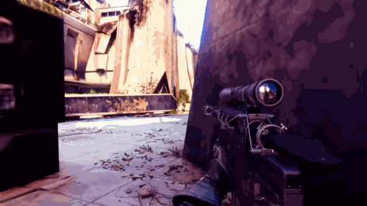

How to Stop Being Bad at Destiny 2
A Poorly Made Tutorial Made By An Idiot
Table of Contents
Intro: What Is This Website?
So the question that probably immediately popped into your mind is: what is this website about?
The purpose of this website is to give those people who are brand new to playing Destiny 2
PvP a basic understanding of what to do,
what some of their mistakes might be that they're making, and how to fix them.
Is this comprehensive? No, probably not.
Is this made by someone who's actually knowledgeable about what they're talking about? No, not really.
Was this made for the explicit reason that I didn't have any ideas for what to make my website about?
Yes, absolutely.
I used to be a fairly strong player, but then quit for 2 full years entirely, so I'm washed as one could say. But, I recently got back into
the game, and am slowly getting used to it again, so hopefully soon I'll actually know what I'm talking about for real, and can remake this site.
In any case, the things mentioned ARE things that I know, and anyone who's actually good at the game would probably tell you to do as well.
Part 1: Sprint, Please Sprint
This is a really simple one.
PRESS THE SPRINT BUTTON.
I really can't stress this enough.
The ONLY thing that is even remotely a negative when it comes to sprinting, is that it takes like a fraction of a second longer to
ADS your weapon.
And the reality is that if you're not sprinting at an enemy to shotgun ape them,
or maybe going for a super fast wide swing with an SMG, you're not going to be sprinting at them and then ADSing, you're going to be slide peeking.
This will be covered more later.
But anyways, sprinting just makes you infinitely faster than botwalking around everywhere.
Destiny 2 is a fast game, and you need to get places fast if you want to keep up.
Part 2: Slide, Slide, Slide
This one is not so simple, but can be learned well with effective practice (which we'll get more into later).
When you peek, you should be peeking it by sliding in the direction you're going to peek from.
Why do we do this?
The answer to this is complex, but I'll do my best to explain.
When you peek anything, there is a tiny delay between your physical body moving into the enemy's line of sight, and you showing up on their screen.
This is known as peeker's advantage, and sliding exploits this by moving your body very quickly out of cover.

An example in VALORANT, where you can see the delay between you seeing the enemy and them seeing you (peeker's perspective is on the left)
This gives the peeker (you) more time to spot and react to the opponent, and gives them less time before you find and kill them.
Sliding isn't just good for peeking though, you can and should be using it to dodge things and get back INTO cover quicker.
Unfortunately, this peeker's advantage can work in reverse in this way, as due to mechanics in networking and server delay, on your screen you might
be back into cover and impossible to kill, while on the opponent's screen they can still see you and shoot at you.
There isn't really anything you can do about this, other than get into cover faster, which is where sliding comes in.
Good Destiny players know exactly when to sprint and when to slide (hint, they slide a LOT) but I can give a general idea of when to do either.
When you're trying to travel a long distance and are safe, you should be sprinting. The key words there are "and are safe".
If you know an enemy has the power to shoot you where you're standing or moving, you should not still be sprinting around, slide into cover.
When you're peeking something, you should be sliding. An alternative to this is to jump into the air as you're wide swinging, which we'll cover more later.
When you're trying to shotgun rush somebody, use both.
Sprint for the first part of the push, then right as you're about to run into them, slide to make your hitbox smaller, and you move faster to desync your hitbox.
This one is really important.
Your gear should be identical or near-identical to what the strongest gear in the game is at that moment.
However, there is some variation in what this gear can be. Your gear should be tailored to what you're good at and what your playstyle is.
There also is a somewhat unimportant factor that I'll mention anyways: what are the rules as to where you're playing? The only reason I'm asking
this question is that if you play official scrimmages or pickup games, there's a very specific and detailed rule set that dictates what you can
and can't use.
If you don't partake in that section of play, completely ignore what I just said. In Trials of Osiris, Iron Banner, Quickplay, Competitive,
literally anything that's in the game by default, these rules don't exist. People can abuse whatever they want in these environments, and you absolutely
should be doing the same. Back to the whole playstyle thing, how exactly do you play? Are you more passive, or very aggressive? Do you like single fire
weapons, burst weapons, or fully automatic weapons? These questions help determine exactly what gear you should be running to more effectively fight people,
as using something that you just don't know how to use will not help you win. Of course, if you WANT to learn how to use something but don't know how to yet,
then do use it, just not in an environment where the only goal is to win at all costs, use it somewhere where the stakes are low.
With that in mind, what IS the most effective gear to be using? This is a difficult question, as the answer changes on a seasonal basis as changes are made
to what certain weapon types do. But as of right now, the answer is pretty conclusive, and it will not change when the next season comes out on June 4th.
For primary weapons, SMGs are still as strong as ever, especially with crouch spamming. They shoot fast, are fairly accurate, and cause an immense amount of flinch to the opponent.
Hand cannons will NEVER be weak, they have been strong since the first day of Destiny 1 a decade ago, and are still strong today.
For special weapons, sniper rifles remain the best option for long range, and the exotic one Cloudstrike can wipe out a whole team with proper timing and aim.

What Cloudstrike can do.
Shotguns are in the same situation as hand cannons, and there are lots of options as to which one you can use, but one stands out as the strongest right now:
Conditional Finality, the exotic from Root of Nightmares.

Conditional Finality
Part 4: Gear Up
Now I know you just read the previous section and thought: "But where do I get all of this meta gear?"
Great question! The answer depends on exactly what you're looking for, but certain places are guaranteed to give you more good stuff than others.
The problem is that a lot of those places require you to already be pretty geared up as it is in order to get what you want from it.
You know what they say, you have to have money to make money? In Destiny 2, you have to have good gear to get good gear.
With that in mind, where do you get good gear when you're starting out? Again, it depends on what you play.
The best place is to start is
PvE, as there aren't going to be extremely skilled and geared opponents.
Where in PvE should you go?
If you have zero gear whatsoever, even in PvE, then you should start by doing whatever current seasonal activity is available, as generally they drop some solid weapons.
Once you've got half decent gear, get 6 people (including yourself), and load up a raid, on NORMAL mode. Do NOT do Master level raids unless you are a
highly experienced player, they are not for the faint of heart. Once you're highly geared and experienced though, definitely do them, the gear they drop is the best in the game.
Anyway, load up a raid like King's Fall or Vault Of Glass, they both drop very good gear.
In King's Fall, you should be searching for something like the Defiance of Yasmin sniper rifle, and in Vault of Glass, you should be searching for the Found Verdict shotgun
and the Fatebringer hand cannon, all are very strong with the right rolls. And of course, if you can grind the Root of Nightmares, try to get Conditional Finality.
If you don't know what rolls are good and what ones aren't, look up the specific weapon with the search term "god roll", people will tell you what you should be looking for.
Over time as you develop more experience, you'll be able to figure out what's good and what isn't.
I know what you're thinking. "What about armor? Don't I need that too?" The answer is a definite yes, but the question lies in how you go about getting it.
Certain activities are just guaranteed to drop better armor than others, specifically dungeons, and Dares of Eternity.
Do these activities, use an armorer mod on your Ghost with the stat you want the most badly, and look for armor with stat totals that are on the high end of in between 60 and 70.
The higher and spikier, the better. When I say spikier, I mean more specialized to certain stats. You should get a good set of high-stat armor, and use d2armorpicker.com to get the stat distribution that you're looking for.
It is completely possible to get 4 different stats at level 10 (100 of that stat), but it's very difficult and requires extremely specific armor rolls to make that happen.
A more realistic goal is 2 or 3 level 10s.

An example of quadruple 100 stats, something very difficult to achieve.